Hoofdstuk 2Veeltermfuncties
Leerplandoelstellingen (GO! Navigator)
Gevorderde wiskunde (WD3_06.08)
-
• WD3_06.08.18 (MD 06.08.13) De leerlingen lossen eenvoudige veeltermvergelijkingen, rationale vergelijkingen, irrationale vergelijkingen, exponentiële vergelijkingen, logaritmische vergelijkingen en goniometrische vergelijkingen algebraïsch op.
-
– afbakening: deling van veeltermen
-
– afbakening: deling door \((x-a)\)
-
-
• WD3_06.08.19 De leerlingen lossen eenvoudige veeltermongelijkheden en rationale ongelijkheden algebraïsch op.
-
– afbakening: tekenonderzoek
-
-
• WD3_06.08.21 (MD 06.08.07) De leerlingen leggen het verband tussen de grafiek en het voorschrift van een functie en haar kenmerken.
-
– afbakening: veeltermfuncties, rationale functies, (elementaire) irrationale functies, exponentiële functies, logaritmische functies \(f(x)=\log _a(x)\), goniometrische functies \(f(x)=\cos x\) en \(f(x)=\tan x\), cyclometrische functies, absolute waardenfunctie, meervoudig functievoorschrift
-
– afbakening: domein, bereik, nulwaarden, tekenverloop, stijgen/dalen/constant, extrema, constante/toenemende/afnemende stijging/daling, symmetrie, periode, amplitude, asymptotisch gedrag, gedrag op oneindig
-
Didactische uitwerking: reële functies en hun indeling, herhaling van de constante functie, de eerstegraadsfunctie en de tweedegraadsfunctie, nulwaarden en tekenverloop van een veeltermfunctie, veeltermvergelijkingen en veeltermongelijkheden, domein en bereik, extrema, even en oneven functies, gedrag op oneindig, een voorschrift opstellen, extremumvraagstukken en het differentiequotiënt.
I Reële functies
1 Definitie
Een reële functie is een verband tussen twee reële veranderlijken \(x\) en \(y\)
\[ f\colon \R \to \R \colon x \mapsto y = f(x) \]
zodanig dat met elke \(x\) ten hoogste één \(y\) overeenkomt.
-
• \(x\): onafhankelijke veranderlijke
-
• \(y\): afhankelijke veranderlijke (beeld of functiewaarde)
-
• \(f(x)\): functievoorschrift
-
• voorstellingen: verwoording, tabel, voorschrift, grafiek
De reële functies worden opgesplitst in 2 categorieën:
-
• algebraïsche functies
-
• transcendente functies
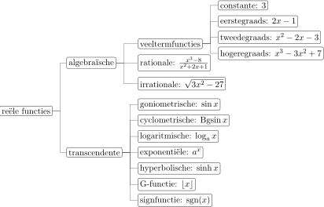
2 Algebraïsche functies
(\(\rightarrow \) 5e jaar)
algebraïsche functie: reële functie waarbij in het voorschrift enkel de bewerkingen \(+\), \(-\), \(\cdot \), \(:\) en \(\sqrt [n]{\phantom {x}}\) voorkomen.
Deze functies worden in 3 klassen ingedeeld.
Veeltermfuncties
\(\rightarrow \) functievoorschrift is een \(n\)-de-graadsveelterm in \(x\)
\[ f(x) = a_nx^n + a_{n-1}x^{n-1} + \cdots + a_2x^2 + a_1x + a_0 = \sum _{i=0}^{n} a_ix^i \qquad \text {met } a_i \in \R \text { en } a_n \neq 0 \]
\(\seteqnumber{0}{}{0}\)\begin{align*} f(x) &= x^3 - 3x^2 + 7 &&\text {veeltermfunctie van de 3e graad} \\ f(x) &= x^2 + \frac {1}{x} &&\text {geen veeltermfunctie: } x^2 + \frac {1}{x} \text { is geen veelterm} \end{align*}
graad \(> 2\): hogeregraadsfunctie
Rationale functies
\(\rightarrow \) functievoorschrift is een quotiënt van 2 veeltermen, waarbij de noemer \(\neq \) nulveelterm
\[ f(x) = \frac {x^3 - 8}{x^2 + 2x + 1} \]
Irrationale functies
\(\rightarrow \) algebraïsche functie die geen rationale functie is: de veranderlijke \(x\) komt in het functievoorschrift voor onder 1 of meerdere worteltekens
\[ f(x) = \sqrt {3x^2 - 27} \]
3 Transcendente functies
(\(\rightarrow \) 6e jaar)
transcendente functie: reële functie die geen algebraïsche is.
-
• goniometrische functies: \(f(x) = \sin x\)
-
• cyclometrische functies: \(f(x) = \Bgsin x\)
-
• logaritmische functies: \(f(x) = \log _a x\) met \(a \in \R _0^+ \setminus \{1\}\)
-
• exponentiële functies: \(f(x) = a^x\) met \(a \in \R _0^+ \setminus \{1\}\)
-
• hyperbolische functies
-
• G-functie: \(y = G(x) = \lfloor x \rfloor \) met \(G(x) \leq x < G(x) + 1\) en \(G(x) \in \Z \)
\(\rightarrow \) grootste geheel getal niet groter dan \(x\): \(G(2.7) = 2\); \(G(-1.7) = -2\)
-
• signfunctie: \(y = \operatorname {sgn}(x)\) met \(\begin {cases} x > 0\colon & \operatorname {sgn}(x) = 1 \\ x < 0\colon & \operatorname {sgn}(x) = -1 \\ x = 0\colon & \operatorname {sgn}(x) = 0 \end {cases}\)
4 VBTL Oefeningen
VBTL Analyse 1a: p 61 nr 1
II Herhaling
1 Constante functie
\[ f(x) = a \qquad \text {met } a \in \R \]
De grafiek is een rechte \(\parallel \) \(x\)-as, door \((0, a)\).

2 Eerstegraadsfunctie
\[ f(x) = ax + b \qquad \text {met } a \neq 0 \]
-
• nulwaarde: \(x = -\dfrac {b}{a}\)
-
• grafiek is een rechte met \(a\) = richtingscoëfficiënt
-
• \(b = 0 \Rightarrow \) rechte door de oorsprong
| \(a > 0\): stijgende rechte | \(a < 0\): dalende rechte | |
| 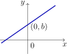 |
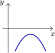 |
|
| \(\begin {array}{c|ccc} x & & -\frac {b}{a} & \\ \hline f(x) & - & 0 & + \end {array}\) | \(\begin {array}{c|ccc} x & & -\frac {b}{a} & \\ \hline f(x) & + & 0 & - \end {array}\) |
3 Tweedegraadsfunctie
\[ f(x) = ax^2 + bx + c \qquad \text {met } a \neq 0 \]
De grafiek is een parabool met
-
• as \(\parallel \) \(y\)-as: as \(\leftrightarrow x = -\dfrac {b}{2a}\)
-
• top \(T\left (-\dfrac {b}{2a},\, -\dfrac {D}{4a}\right )\) of \(T\left (-\dfrac {b}{2a},\, f\left (-\dfrac {b}{2a}\right )\right )\)
-
• \(a > 0 \Rightarrow \) dalparabool met \(\min = f\left (-\dfrac {b}{2a}\right )\)
-
• \(a < 0 \Rightarrow \) bergparabool met \(\max = f\left (-\dfrac {b}{2a}\right )\)
-
• nulwaarden: oplossingen van de vierkantsvergelijking \(ax^2 + bx + c = 0\) met \(D = b^2 - 4ac\)
| \(V\) | \(a < 0\) | \(a > 0\) | tekenverloop | |
| \(D < 0\) | \(\emptyset \) |  |
\(\begin {array}{c|c} x & \\ \hline f(x) & a \end {array}\) | |
| \(D = 0\) | \(\left \{-\dfrac {b}{2a}\right \}\) | 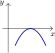 |
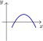 |
\(\begin {array}{c|ccc} x & & -\frac {b}{2a} & \\ \hline f(x) & a & 0 & a \end {array}\) |
| \(D > 0\) | \(\left \{\dfrac {-b \pm \sqrt {D}}{2a}\right \}\) | 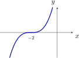 |
\(\begin {array}{c|ccccc} x & & x_1 & & x_2 & \\ \hline f(x) & a & 0 & -a & 0 & a \end {array}\) |
In het tekenverloop staat \(a\) voor het teken van \(a\) en \(-a\) voor het tegengestelde teken; in de laatste rij is \(x_1 < x_2\).
III Voorbeeld
VBTL oefening 4 (p 61)
Een sportvliegtuig vliegt van \(A\) naar \(B\). Zijn hoogte is
\[ h(t) = -t^4 + 16t^3 - 88t^2 + 192t \]
met \(h(t)\) in meter en \(t\) in uur. \(A\) en \(B\) liggen op hoogte \(0\).
-
(a) Schets de grafiek van \(h\); de vlucht duurt \(8\) uur.
\(\rightarrow \) nulwaarden zoeken
-
(b) Na het opstijgen verliest het vliegtuig hoogte in een luchtzak. Wanneer is het daar op zijn laagst?
\(\rightarrow \) relatief minimum
-
(c) Wanneer is het vliegtuig het hoogst, en hoe hoog?
\(\rightarrow \) absoluut maximum
-
(d) Na \(1\) uur is het vliegtuig \(119\) m hoog. Hoelang vliegt het hoger dan \(119\) m?
\(\rightarrow \) ongelijkheid oplossen
De uitwerking volgt in Toepassing ICT.
IV Hogeregraadsvergelijkingen en -ongelijkheden
1 Hogeregraadsvergelijkingen
\[ a \text { is een nulwaarde van de functie } f \iff f(a) = 0 \]
\(f(x) = 0\) is een veeltermvergelijking.
Om de nulwaarden te vinden, gaan we het functievoorschrift ontbinden in factoren:
-
• Een veeltermfunctie van de \(n\)-de graad heeft hoogstens \(n\) nulwaarden.
-
• Een veeltermfunctie kan altijd ontbonden worden in een product van factoren van de 1e graad en/of onontbindbare factoren van de 2e graad (\(D < 0\)).
-
• Tekenverloop (tekentabel): eerst het teken van elke factor, dan het teken van het product.
Voorbeeld 1
Bepaal de nulwaarden en het tekenverloop van de functie \(f\) met \(f(x) = 3x^3 - 3x^2 - 6x\).
nulwaarden \(-1\), \(0\) en \(2\) \(x\) is een nulwaarde
\(\seteqnumber{0}{}{0}\)\begin{align*} \iff \quad & f(x) = 0 \\ \iff \quad & 3x^3 - 3x^2 - 6x = 0 \\ \iff \quad & 3x\,(x^2 - x - 2) = 0 &&\aside {a\cdot b = 0 \iff a = 0 \lor b = 0} \\ \iff \quad & 3x = 0 \;\lor \; x^2 - x - 2 = 0 &&D = 9 \\ \iff \quad & x = 0 \;\lor \; x = -1 \;\lor \; x = 2 \end{align*} De nulwaarden zijn \(-1\), \(0\) en \(2\).
\[ \begin {array}{c|ccccccc} x & & -1 & & 0 & & 2 & \\ \hline 3x & - & - & - & 0 & + & + & + \\ x^2 - x - 2 & + & 0 & - & - & - & 0 & + \\ \hline f(x) & - & 0 & + & 0 & - & 0 & + \end {array} \]
Voorbeeld 2
Bepaal de nulwaarden en het tekenverloop van \(f(x) = 15x^3 - 44x^2 - 5x + 6\).
We ontbinden door delers van de vorm \(x - a\) te zoeken.
Opmerking: opdat een veelterm deelbaar zou zijn door \(x - a\) (\(a \in \Z \)), is het nodig, maar niet voldoende, dat de constante term deelbaar is door \(a\) (zie hoofdstuk 1).
nulwaarden \(-\dfrac {2}{5}\), \(\dfrac {1}{3}\) en \(3\) delers van \(6\): \(\pm 1\), \(\pm 2\), \(\pm 3\), \(\pm 6\)
GRM: 2ndcalcf4trace 1:value of 2ndtablef5graph
\(\seteqnumber{0}{}{0}\)\begin{align*} f(1) &= -28 & f(2) &= -60 & f(3) &= 0 \\ f(-1) &= -48 & f(-2) &= -280 \end{align*} \(\Rightarrow \) de veelterm is deelbaar door \(x - 3\). Horner:
\[ \begin {array}{r|rrr|r} & 15 & -44 & -5 & 6 \\ 3 & \downarrow & 45 & 3 & -6 \\ \hline & 15 & 1 & -2 & 0 \end {array} \]
\(\seteqnumber{0}{}{0}\)\begin{align*} f(x) = 0 \iff \quad & (x - 3)(15x^2 + x - 2) = 0 \\ \iff \quad & x - 3 = 0 \;\lor \; 15x^2 + x - 2 = 0 &&D = 121 \\ \iff \quad & x = 3 \;\lor \; x = -\frac {2}{5} \;\lor \; x = \frac {1}{3} \end{align*} De nulwaarden zijn \(-\dfrac {2}{5}\), \(\dfrac {1}{3}\) en \(3\).
\[ \begin {array}{c|ccccccc} x & & -\frac {2}{5} & & \frac {1}{3} & & 3 & \\ \hline x - 3 & - & - & - & - & - & 0 & + \\ 15x^2 + x - 2 & + & 0 & - & 0 & + & + & + \\ \hline f(x) & - & 0 & + & 0 & - & 0 & + \end {array} \]
Voorbeeld 3
Ontbind in factoren: \(f(x) = 2x^4 + 5x^3 - 3x^2 - 8x + 4\).
\(f(x) = (x - 1)(x + 2)^2(2x - 1)\)
\[ \begin {array}{r|rrrrr} & 2 & 5 & -3 & -8 & 4 \\ 1 & \downarrow & 2 & 7 & 4 & -4 \\ \hline & 2 & 7 & 4 & -4 & 0 \\ -2 & \downarrow & -4 & -6 & 4 & \\ \hline & 2 & 3 & -2 & 0 & \end {array} \qquad \begin {array}{l} 2x^2 + 3x - 2\colon \quad D = 25 \\[1ex] x = -2 \;\lor \; x = \dfrac {1}{2} \end {array} \]
\(\seteqnumber{0}{}{0}\)\begin{align*} \Rightarrow \quad f(x) &= (x - 1)(x + 2)\cdot 2\,(x + 2)\left (x - \frac {1}{2}\right ) \\ &= (x - 1)(x + 2)^2(2x - 1) \end{align*} nulwaarden: \(x = 1\); \(\underline {x = -2}\); \(x = \dfrac {1}{2}\)
\(-2\) is een tweevoudige nulwaarde (multipliciteit 2). In een tweevoudig nulpunt raakt de grafiek van \(f\) aan de \(x\)-as. (Laat de grafiek tekenen met het GRM.)
Voorbeeld 4
Ontbind in factoren: \(f(x) = x^3 + 6x^2 + 12x + 8\).
\(f(x) = (x + 2)^3\)
\[ \begin {array}{r|rrrr} & 1 & 6 & 12 & 8 \\ -2 & \downarrow & -2 & -8 & -8 \\ \hline & 1 & 4 & 4 & 0 \\ -2 & \downarrow & -2 & -4 & \\ \hline & 1 & 2 & 0 & \end {array} \]
\[ \Rightarrow \quad f(x) = (x + 2)^3 \]

We vinden 1 drievoudige nulwaarde: \(x = -2\).
In een drievoudig nulpunt raakt de grafiek aan de \(x\)-as, bovendien zal de grafiek doorheen de \(x\)-as buigen. We noemen zo’n punt een buigpunt van de grafiek. Dit geldt voor alle nulpunten met oneven multipliciteit groter dan 1.
Voorbeeld 5
Bepaal de nulwaarden van \(f(x) = 4x^4 + 8x^3 - 13x^2 - 16x + 10\).
De delers van \(10\) leveren ons geen nulwaarde. We zoeken daarom grafisch naar de nulwaarden (ICT).
nulwaarden \(-\dfrac {5}{2}\), \(-\sqrt {2}\), \(\dfrac {1}{2}\) en \(\sqrt {2}\)
statplotf1y= \(Y_1 = 4X^4 + 8X^3 - 13X^2 - 16X + 10\)
tablef5graph \(\Rightarrow \) 4 nulpunten!
2ndcalcf4trace 2:zero
-
• Left Bound? … entrysolveenter
-
• Right Bound? … entrysolveenter
-
• Guess? … entrysolveenter
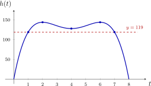
Op deze manier vinden we:
\[ x = -\frac {5}{2}; \quad x = -\sqrt {2} \approx -1.4142; \quad x = \frac {1}{2}; \quad x = \sqrt {2} \approx 1.4142 \]
Uit de grafiek lezen we ook het tekenverloop af:
\[ \begin {array}{c|ccccccccc} x & & -\frac {5}{2} & & -\sqrt {2} & & \frac {1}{2} & & \sqrt {2} & \\ \hline f(x) & + & 0 & - & 0 & + & 0 & - & 0 & + \end {array} \]
\(-\dfrac {5}{2}\) en \(\dfrac {1}{2}\) zijn geen gehele getallen: daarom vonden we ze niet bij de delers van \(10\).
Voorbeeld 6: bikwadratische vergelijking
Los op in \(\R \): \(x^4 - 9x^2 + 8 = 0\).
\(V = \left \{-2\sqrt {2},\, -1,\, 1,\, 2\sqrt {2}\right \}\) HO (hulponbekende): \(y = x^2\)
RV (resolvente vergelijking): \(y^2 - 9y + 8 = 0\) \(D = 49\)
\(\seteqnumber{0}{}{0}\)\begin{align*} \iff \quad & y = 1 \;\lor \; y = 8 \\ \iff \quad & x^2 = 1 \;\lor \; x^2 = 8 \\ \iff \quad & x = -1 \;\lor \; x = 1 \;\lor \; x = -2\sqrt {2} \;\lor \; x = 2\sqrt {2} \end{align*}
\[ V = \left \{-2\sqrt {2},\, -1,\, 1,\, 2\sqrt {2}\right \} \]
VBTL Oefeningen
VBTL Analyse 1a: p 61 nr 2 en 3; p 68 nr 26 (c, g, i en m); p 69 nr 27, 28, 30 en 31
2 Hogeregraadsongelijkheden
Een ongelijkheid met graad \(> 2\): veeltermongelijkheid of hogeregraadsongelijkheid.
Werkwijze:
-
1. herleid de ongelijkheid op nul
-
2. zoek de nulwaarden
-
3. stel het tekenverloop op
-
4. lees de oplossingenverzameling af
-
5. grafische controle (ICT)
Voorbeeld 1
Los op in \(\R \): \(-6x^3 - 17x^2 + 4x + 3 \leq 0\).
\(V = \left [-3,\, -\dfrac {1}{3}\right ] \cup \left [\dfrac {1}{2},\, +\infty \right [\) 1) We zoeken de nulwaarden:
\[ \begin {array}{r|rrr|r} & -6 & -17 & 4 & 3 \\ -3 & \downarrow & 18 & -3 & -3 \\ \hline & -6 & 1 & 1 & 0 \end {array} \]
\(\seteqnumber{0}{}{0}\)\begin{align*} & -6x^3 - 17x^2 + 4x + 3 = 0 \\ \iff \quad & (x + 3)(-6x^2 + x + 1) = 0 &&D = 25 \\ \iff \quad & x = -3 \;\lor \; x = -\frac {1}{3} \;\lor \; x = \frac {1}{2} \end{align*} 2) We stellen het tekenverloop op:
\[ \begin {array}{c|ccccccc} x & & -3 & & -\frac {1}{3} & & \frac {1}{2} & \\ \hline x + 3 & - & 0 & + & + & + & + & + \\ -6x^2 + x + 1 & - & - & - & 0 & + & 0 & - \\ \hline f(x) & + & 0 & - & 0 & + & 0 & - \end {array} \]
3) We lezen de oplossingenverzameling af:
\[ V = \left [-3,\, -\frac {1}{3}\right ] \cup \left [\frac {1}{2},\, +\infty \right [ \]
4) Grafische controle: teken de grafiek met ICT.
Voorbeeld 2
Los op in \(\R \): \(x^3 + 3x^2 \geq 4\).
\(V = \left [1,\, +\infty \right [ \cup \{-2\}\)
\[ x^3 + 3x^2 - 4 \geq 0 \qquad \qquad \begin {array}{r|rrr|r} & 1 & 3 & 0 & -4 \\ 1 & \downarrow & 1 & 4 & 4 \\ \hline & 1 & 4 & 4 & 0 \end {array} \]
\[ f(x) = (x - 1)(x^2 + 4x + 4) = (x - 1)(x + 2)^2 \qquad \Rightarrow \qquad \text {nulwaarden: } 1 \text { en } \underline {-2} \]
\[ \begin {array}{c|ccccc} x & & -2 & & 1 & \\ \hline x - 1 & - & - & - & 0 & + \\ (x + 2)^2 & + & 0 & + & + & + \\ \hline f(x) & - & 0 & - & 0 & + \end {array} \]
\[ V = \left [1,\, +\infty \right [ \cup \{-2\} \]
\(-2\) is een tweevoudige nulwaarde: de grafiek raakt er aan de \(x\)-as en \(f\) wisselt er niet van teken.
VBTL Oefeningen
VBTL Analyse 1a: p 68 nr 26 (a, b, d tot f, h en j tot l); p 69 nr 29
V Toepassing ICT
1 Voorbeeld
We beantwoorden de vragen uit het voorbeeld van het sportvliegtuig (VBTL Analyse 1a: p 61 nr 4).
\[ h(t) = -t^4 + 16t^3 - 88t^2 + 192t \]
(a) Duur van de vlucht en grafiek
\(\rightarrow \) we zoeken de nulwaarden van \(h(t)\)
de vlucht duurt \(8\) uur; praktisch domein \(= [0, 8]\) Algebraïsch:
\(\seteqnumber{0}{}{0}\)\begin{align*} & -t^4 + 16t^3 - 88t^2 + 192t = 0 \\ \iff \quad & -t\,(t - 8)(t^2 - 8t + 24) = 0 &&D < 0 \\ \iff \quad & t = 0 \;\lor \; t = 8 \end{align*} Grafisch: 2ndtablef5graph
\[ \begin {array}{c|ccccccccc} t & 0 & 1 & 2 & 3 & 4 & 5 & 6 & 7 & 8 \\ \hline h(t) & 0 & 119 & 144 & 135 & 128 & 135 & 144 & 119 & 0 \end {array} \]
tblsetf2window Xmin=-1, Xmax=10, Ymin=0, Ymax=200, dan tablef5graph

\(\Rightarrow \) De vlucht duurt \(8\) uur. Praktisch domein \(= [0, 8]\).
(b) Laagste punt in de luchtzak
na \(4\) uur, op \(128\) m 2ndcalcf4trace 3:minimum, met Left Bound?, Right Bound? en Guess?
\[ \text {voor } t = 4 \Rightarrow h(t) = 128 \qquad \rightarrow \text {\textbf {relatief} minimum binnen } [0, 8] \]
(c) Hoogste punt
na \(2\) uur en na \(6\) uur, op \(144\) m 2ndcalcf4trace 4:maximum
\(\Rightarrow \) 2 maxima, namelijk
\(\seteqnumber{0}{}{0}\)\begin{align*} \text {voor } t = 2 &\Rightarrow h(t) = 144 \\ \text {voor } t = 6 &\Rightarrow h(t) = 144 \qquad \rightarrow \text {\textbf {absoluut} maximum binnen } [0, 8] \end{align*} \(\Rightarrow \) Praktisch bereik \(= [0, 144]\).
(d) Hoelang is \(h(t) > 119\)?
\(6\) uur, van \(t = 1\) tot \(t = 7\) Grafisch: statplotf1y= \(Y_2 = 119\), dan 2ndcalcf4trace 5:intersect
\[ \Rightarrow \quad t = 1 \text { en } t = 7 \]
\(\Rightarrow \) Het vliegtuig bevond zich gedurende \(6\) uur hoger dan \(119\) m.
Algebraïsch:
\(\seteqnumber{0}{}{0}\)\begin{align*} & h(t) > 119 \\ \iff \quad & -t^4 + 16t^3 - 88t^2 + 192t - 119 > 0 \\ \iff \quad & (t - 1)(t - 7)(-t^2 + 8t - 17) > 0 &&D < 0 \end{align*}
\[ \begin {array}{c|ccccc} t & & 1 & & 7 & \\ \hline t - 1 & - & 0 & + & + & + \\ t - 7 & - & - & - & 0 & + \\ -t^2 + 8t - 17 & - & - & - & - & - \\ \hline h(t) - 119 & - & 0 & + & 0 & - \end {array} \qquad \Rightarrow \qquad V = \left ]1,\, 7\right [ \]
2 VBTL Oefeningen
VBTL Analyse 1a: p 62 nr 7
VI Algemene begrippen
1 Begrippen
-
• Domein = verzameling van de \(x\)-waarden waarvoor de functie gedefinieerd is (de functiewaarde bestaat). Notatie: \(\dom f\).
Grafisch: de grafiek loodrecht projecteren op de \(x\)-as.
-
• Afbeelding = functie met \(\dom f = \R \).
-
• Praktisch of realistisch domein = de verzameling van de \(x\)-waarden waarvoor de opgave zinvol is.
-
• Nulwaarden = waarden van \(x\) waarvoor \(f(x) = 0\) (= wortels).
-
• Bereik = verzameling van de \(y\)-waarden waarvoor een \(x\)-waarde bestaat zodat \(y = f(x)\). Notatie: \(\ber f\).
Grafisch: de grafiek loodrecht projecteren op de \(y\)-as.
-
• Praktisch of realistisch bereik = de verzameling van de \(y\)-waarden die de functie binnen het praktisch domein aanneemt.
-
• Relatief of lokaal maximum (minimum): als er een open interval \(I\) rond \(c \in \dom f\) bestaat waarvoor geldt
\[ \forall x \in I \setminus \{c\}\colon \quad f(x) < f(c) \qquad \bigl (f(x) > f(c)\bigr ) \]
dan is \(f(c)\) een relatief maximum (minimum).
-
• Absoluut maximum (minimum):
\(\seteqnumber{0}{}{0}\)\begin{align*} & f(c) \text { is een absoluut maximum (minimum)} \\ \iff \quad & \forall x \in \dom f\colon \quad f(x) \leq f(c) \qquad \bigl (f(x) \geq f(c)\bigr ) \end{align*}
-
• Extreme waarden of extrema: maxima en minima. Een extreme waarde is een functiewaarde, geen \(x\)-waarde.
2 Voorbeeld
Zie handboek VBTL Analyse 1a, de vlucht met de luchtballon p 45.
\[ h(t) = 24 - 2t + \frac {1}{18}t^3 - \frac {1}{216}t^4 \]
met \(h(t)\) in tientallen meter en \(t\) in uur; \(t = 0\): boven de kerktoren.
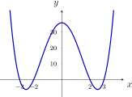
-
• \(\dom h = \R \)
-
• nulwaarden: \(t \approx -7.5595\) en \(t = 12\) \(\Rightarrow \) praktisch domein \(= [-7.5595,\, 12]\)
-
• de vlucht duurt dus \(19.5595\) u \(\approx \) \(19\) u \(34\) min
-
• \(t = 0 \Rightarrow h(t) = 24\) \(\Rightarrow \) op \(240\) m hoogte boven de kerktoren
-
• \(h(t) > 18\): 5:intersect geeft \(t = -6\) en \(t = 6\) \(\Rightarrow \) gedurende \(12\) u hoger dan \(180\) m
-
• \(\max = 28.125\) voor \(t = -3\) \(\Rightarrow \) maximale hoogte \(= 281.25\) m (absoluut maximum)
-
• \(\ber h = \left ]-\infty ,\, 28.125\right ]\) en praktisch bereik \(= [0,\, 28.125]\)
3 VBTL Oefeningen
VBTL Analyse 1a: p 62 nr 6; p 63 nr 8 tot 10; p 64 nr 12
VII Even en oneven functies
1 Voorbeeld 1
\begin{align*} f(x) &= x^4 - 13x^2 + 36 \\ f(-x) &= (-x)^4 - 13\cdot (-x)^2 + 36 \\ &= x^4 - 13x^2 + 36 \\ &= f(x) \end{align*} Teken de grafiek met het GRM.
\(\Rightarrow \) de \(y\)-as is symmetrieas.
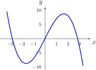
\[ f \text { is \textbf {even}} \iff \forall x \in \dom f\colon \quad \boxed {f(-x) = f(x)} \]
De grafiek van een even functie is symmetrisch t.o.v. de \(y\)-as.
2 Voorbeeld 2
\begin{align*} f(x) &= -x^3 + 8x \\ f(-x) &= -(-x)^3 + 8\cdot (-x) \\ &= x^3 - 8x \\ &= -f(x) \end{align*} Teken de grafiek met het GRM.
\(\Rightarrow \) symmetrisch t.o.v. \(O(0, 0)\).

\[ f \text { is \textbf {oneven}} \iff \forall x \in \dom f\colon \quad \boxed {f(-x) = -f(x)} \]
De grafiek van een oneven functie is symmetrisch t.o.v. de oorsprong.
3 Voorbeeld 3
\(\seteqnumber{0}{}{0}\)\begin{align*} f(x) &= x^3 - 3x^2 + 2 \\ f(-x) &= (-x)^3 - 3\cdot (-x)^2 + 2 \\ &= -x^3 - 3x^2 + 2 \end{align*}
\[ \Rightarrow \quad f(-x) \neq f(x) \quad \text {en}\quad f(-x) \neq -f(x) \quad \Rightarrow \quad f \text { is niet even en niet oneven} \]
VIII Uitgewerkt voorbeeld met GRM (TI-84)
VBTL oefening 5 (p 62)
De vorm van een berg (de doorsnede met een verticaal vlak) kan beschreven worden door de functie
\[ h(x) = -3x^4 + 8x^3 + 144x^2 + 432 \]
met \(h(x)\) de hoogte in meter en \(x\) de horizontale afstand in meter.
-
(a) Schets de grafiek van \(h\).
-
(b) Bepaal de coördinaten van de toppen en de dalen van de berg.
-
(c) Maak een tabel waarin je de stijging of daling van de hoogte van de berg weergeeft voor \(\Delta x = 1\).
1 Schets de grafiek van deze functie
statplotf1y= en voer het voorschrift in.
Bij \(Y_1\) komt het voorschrift van \(h\), met \(X\) in de plaats van \(x\): \(Y_1 = -3X^4+8X^3+144X^2+432\). Het minteken vooraan typ je met ans?(−), de \(X\) met linkX,T,θ,n en de machten met πH^.
Keuze van het aangepast venster:
2ndtablef5graph: we zoeken tussen welke waarden \(x\) en \(y\) liggen.
De tabel begint bij \(X=0\) en gaat telkens \(1\) verder. De waarden van \(Y_1\) lopen hier van \(432\) tot \(3456\). Het venster voor \(y\) moet dus tot boven \(3456\) gaan.
tblsetf2window en stel het venster in.
Wat we invullen:
-
• \(X_{\min } = -10\) en \(X_{\max } = 15\): de grenzen voor \(x\);
-
• \(X_{\mathrm {scl}} = 1\): de afstand tussen twee streepjes op de \(x\)-as;
-
• \(Y_{\min } = -500\) en \(Y_{\max } = 3800\): de grenzen voor \(y\), een stuk onder \(0\), zodat de \(x\)-as en de nulwaarden goed te zien zijn, en boven de hoogste waarde \(3456\);
-
• \(Y_{\mathrm {scl}} = 200\): de afstand tussen twee streepjes op de \(y\)-as.
tablef5graph
Met dit venster staat de hele berg in beeld, met twee toppen en een dal. De coördinaten ervan zoeken we in de volgende opgave.
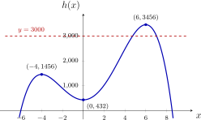
2 Bepaal de coördinaten van de toppen en de dalen van deze berg
\(\rightarrow \) nulwaarden, minima, maxima
Schatten
calcf4trace: de cursor staat op de kromme.
Bovenaan staat het voorschrift, onderaan lees je de coördinaten van de cursor af.
▶ (of ◀): laat de cursor over de kromme bewegen.
De hoogste waarde van \(Y\) vinden we rond \(X \approx 6\): daar ligt een top, ongeveer \((6, 3455)\). Dat is een schatting, want de cursor springt van beeldpunt naar beeldpunt en staat zelden precies op de top.
GRM laten zoeken
2ndcalcf4trace: het menu CALCULATE.
We gebruiken 2:zero voor een nulwaarde, 3:minimum voor een dal en 4:maximum voor een top. Het GRM vraagt telkens Left Bound?, Right Bound? en Guess?.
2:zero, typ de linkergrens \(-8\) en entrysolveenter.
De kromme snijdt de \(x\)-as links in de buurt van \(x = -6\). De linkergrens ligt links van die nulwaarde; ze mag er ruim naast liggen.
Typ de rechtergrens \(-3\) en entrysolveenter.
De rechtergrens ligt rechts van de nulwaarde. Tussen de twee grenzen ligt maar één nulwaarde.
entrysolveenter bij Guess?.
\(\Rightarrow \) nulwaarde \(x = -6\)
2ndcalcf4trace 2:zero tussen \(7\) en \(10\).
\(\Rightarrow \) nulwaarde \(x \approx 8.528\)
2ndcalcf4trace 3:minimum tussen \(-3\) en \(4\).
\(\Rightarrow \) \(h(0) = 432\): relatief minimum
2ndcalcf4trace 4:maximum tussen \(-6\) en \(-1\).
\(\Rightarrow \) \(h(-4) = 1456\): relatief maximum
2ndcalcf4trace 4:maximum tussen \(2\) en \(9\).
\(\Rightarrow \) \(h(6) = 3456\): absoluut maximum
\(\Rightarrow \) toppen \((-4, 1456)\) en \((6, 3456)\); dal \((0, 432)\).
Domein beperken: praktisch domein instellen
statplotf1y=, clear en voer het voorschrift opnieuw in, nu tussen haakjes.
De berg ligt tussen de twee nulwaarden: het praktisch domein is \([-6, 8.528[\).
Geef na het voorschrift tussen haakjes het interval aan waarin deze functie moet worden getekend.
De tekens vind je zo:
-
• \(\leq \): 2ndtestAmath 6:\(\leq \)
-
• \(<\): 2ndtestAmath 5:\(<\)
-
• and: 2ndtestAmath LOGIC 1:and
Daarna tablef5graph.
3 Welk deel van de berg bevindt zich boven de 3000 m?
\(\rightarrow \) snijpunten met de rechte \(y = 3000\) bepalen
statplotf1y= en voer bij \(Y_2\) de rechte in: \(Y_2 = 3000\).
De berg is hoger dan \(3000\) m waar de kromme boven de rechte \(y = 3000\) ligt.
tablef5graph: de rechte snijdt de berg in twee punten, links en rechts van de hoogste top.
2ndcalcf4trace 5:intersect
Het GRM vraagt nu welke twee krommen we willen snijden: First curve? en Second curve?.
Twee keer entrysolveenter: de krommen zijn \(Y_1\) en \(Y_2\).
Bij Guess? geven we een schatting van het snijpunt dat we zoeken.
Typ de schatting \(5\) voor het linkse snijpunt en entrysolveenter.
\(\Rightarrow \) \(x \approx 4.73\)
2ndcalcf4trace 5:intersect met de schatting \(7\) voor het rechtse snijpunt.
\(\Rightarrow \) \(x \approx 7.03\)
\(\Rightarrow \) Het deel van de berg tussen \(x = 4.73\) m en \(x = 7.03\) m bevindt zich hoger dan \(3000\) m.
4 Maak een tabel van de stijging of daling van de hoogte (\(\Delta x = 1\))
\(\rightarrow \) differenties (of verschillen) bepalen: \(\Delta h(x) = h(x + 1) - h(x)\)
statplotf1y=, wis \(Y_2\) met clear. Daarna distrvars ▶: het menu Y-VARS.
We definiëren een 2e functie:
\[ Y_2 = Y_1(X + 1) - Y_1(X) \]
De naam \(Y_1\) typ je niet, je haalt ze uit dit menu.
1:Function... en dan 1:Y1.
Vul aan tot \(Y_2 = Y_1(X + 1) - Y_1(X)\).
De tweede \(Y_1\) haal je op dezelfde manier uit het menu.
2ndtblsetf2window: de tabel begint bij \(-6\) en gaat telkens \(1\) verder.
ΔTbl=1 is de stap \(\Delta x = 1\).
2ndtablef5graph
\(Y_2 > 0\): stijging \(Y_2 < 0\): daling
IX Kenmerken van een veeltermfunctie bespreken
Zie handboek VBTL Analyse 1a, voorbeelden p 49 tot 52.
1 Voorbeeld
\[ f(x) = 9 + 8x^2 - x^4 \]
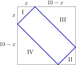
-
• domein: \(\dom f = \R \)
-
• bereik: \(\ber f = \left ]-\infty ,\, 25\right ]\)
-
• nulwaarden: \(x = -3\) en \(x = 3\)
\(\seteqnumber{0}{}{0}\)\begin{align*} 9 + 8x^2 - x^4 = 0 \quad &\overset {y = x^2}{\iff }\quad -y^2 + 8y + 9 = 0 &&D = 100 \\ &\iff \quad y = -1 \;\lor \; y = 9 \\ &\iff \quad x^2 = -1\ \lightning \;\lor \; x^2 = 9 \\ &\iff \quad x = -3 \;\lor \; x = 3 \end{align*}
-
• snijpunten met de assen: met de \(x\)-as: \((-3, 0)\) en \((3, 0)\); met de \(y\)-as: \((0, 9)\)
-
• tekenverloop:
\[ \begin {array}{c|ccccc} x & & -3 & & 3 & \\ \hline f(x) & - & 0 & + & 0 & - \end {array} \]
-
• stijgen en dalen:
\[ \begin {array}{c|ccccccc} x & & -2 & & 0 & & 2 & \\ \hline f(x) & \nearrow & 25 & \searrow & 9 & \nearrow & 25 & \searrow \\ & & \text {max} & & \text {min} & & \text {max} & \end {array} \]
-
• extrema: relatief minimum \(= 9\) voor \(x = 0\); absoluut maximum \(= 25\) voor \(x = -2\) en \(x = 2\)
-
• symmetrie: \(f(-x) = 9 + 8\cdot (-x)^2 - (-x)^4 = f(x)\) \(\Rightarrow \) \(f\) is even
-
• gedrag op oneindig:
\[ \begin {array}{c|c} x & f(x) \\ \hline 10 & -9191 \\ 100 & -99\,919\,991 \\ \downarrow & \downarrow \\ +\infty & -\infty \end {array} \qquad \qquad \begin {array}{c|c} x & f(x) \\ \hline -10 & -9191 \\ -100 & -99\,919\,991 \\ \downarrow & \downarrow \\ -\infty & -\infty \end {array} \]
\[ \lim _{x \to +\infty } f(x) = -\infty \qquad \text {en}\qquad \lim _{x \to -\infty } f(x) = -\infty \]
2 Gedrag op oneindig
De limiet van een veeltermfunctie voor \(x \to \pm \infty \) = de limiet van de hoogstegraadsterm.
\[ \lim _{x \to \pm \infty } \left (9 + 8x^2 - x^4\right ) = \lim _{x \to \pm \infty } \left (-x^4\right ) = -\infty \]
\[ \lim _{x \to +\infty } \left (x^3 - 3x^2 + 2\right ) = \lim _{x \to +\infty } x^3 = +\infty \qquad \qquad \lim _{x \to -\infty } \left (x^3 - 3x^2 + 2\right ) = \lim _{x \to -\infty } x^3 = -\infty \]
3 VBTL Oefeningen
VBTL Analyse 1a: p 64 nr 13 en 15; p 65 nr 17 en 19
X Functievoorschriften opstellen
1 Voorbeeld 1
Bepaal een veeltermfunctie van de 3e graad met
-
• \(1\) als nulwaarde
-
• \(-2\) als tweevoudige nulwaarde
-
• \(P(0, 4) \in \) grafiek
\(f(x) = -(x - 1)(x + 2)^2 = -x^3 - 3x^2 + 4\)
\[ f(x) = a\,(x - 1)(x + 2)^2 \]
\(P(0, 4) \in \) grafiek
\(\seteqnumber{0}{}{0}\)\begin{align*} \iff \quad & f(0) = 4 \\ \iff \quad & a\cdot (-1)\cdot 2^2 = 4 \\ \iff \quad & a = -1 \end{align*}
\[ \Rightarrow \quad f(x) = -(x - 1)(x + 2)^2 = -x^3 - 3x^2 + 4 \]
\(\rightarrow \) grafisch controleren! (nulwaarden, raakpunt met de \(x\)-as, …)
2 Voorbeeld 2
Bepaal een veeltermfunctie van de 3e graad, waarvan de grafiek door de punten \(A(1, 0)\), \(B(0, 1)\), \(C(2, 9)\) en \(D(-2, -15)\) gaat.
\(f(x) = 2x^3 - x^2 - 2x + 1\)
\[ f(x) = ax^3 + bx^2 + cx + d \]
\[ \left \{ \begin {array}{rcrl} a + b + c + d &=& 0 &\qquad (A \in f) \\ d &=& 1 &\qquad (B \in f) \\ 8a + 4b + 2c + d &=& 9 &\qquad (C \in f) \\ -8a + 4b - 2c + d &=& -15 &\qquad (D \in f) \end {array} \right . \]
\[ A_b = \left (\begin {array}{rrrr|r} 1 & 1 & 1 & 1 & 0 \\ 0 & 0 & 0 & 1 & 1 \\ 8 & 4 & 2 & 1 & 9 \\ -8 & 4 & -2 & 1 & -15 \end {array}\right ) \overset {\text {rref}}{\sim } \left (\begin {array}{rrrr|r} 1 & 0 & 0 & 0 & 2 \\ 0 & 1 & 0 & 0 & -1 \\ 0 & 0 & 1 & 0 & -2 \\ 0 & 0 & 0 & 1 & 1 \end {array}\right ) \]
GRM: 2ndmatrixDx⁻¹ MATH B:rref(
\[ \Rightarrow \quad f(x) = 2x^3 - x^2 - 2x + 1 \]
\(\rightarrow \) grafische controle (calcf4trace) of controle met 2ndtablef5graph
3 VBTL Oefeningen
VBTL Analyse 1a: p 64 nr 14; p 66 nr 20
XI Vraagstukken: extremumvraagstukken
1 Voorbeeld 1
Zie handboek VBTL Analyse 1a, p 55.
Teken een rechthoek met maximale oppervlakte in een vierkant met zijde \(10\) cm.

\begin{align*} A_{\text {rechthoek}} &= A_{\text {vierkant}} - (A_{\text {I}} + A_{\text {II}}) - (A_{\text {III}} + A_{\text {IV}}) \\ &= 100 - x^2 - (10 - x)^2 \\ \Rightarrow \quad f(x) &= -2x^2 + 20x \end{align*} I en II vormen samen een vierkant met zijde \(x\), III en IV een vierkant met zijde \(10 - x\).
De functie \(f\) is een bergparabool met top
\[ T\left (-\frac {b}{2a},\, f\left (-\frac {b}{2a}\right )\right ) = T(5, 50) \]
\(\Rightarrow \) de oppervlakte is maximaal voor \(x = 5\) en de maximale oppervlakte \(= f(5) = 50\) cm\(^2\).
Praktische oplossing: de rechthoek is dan een vierkant met zijde \(5\sqrt {2}\) cm \(\approx 7.07\) cm.
2 Voorbeeld 2
Zie handboek VBTL Analyse 1a, p 56.
Uit de vier hoeken van een rechthoekig stuk karton van \(80\) cm op \(50\) cm snijden we gelijke vierkanten weg. Van de rest maken we een doos zonder deksel. Voor welke hoogte is het volume maximaal?
\(\seteqnumber{0}{}{0}\)\begin{align*} \text {hoogte} &= x \qquad \text {breedte} = 50 - 2x \qquad \text {lengte} = 80 - 2x \\ V(x) &= (80 - 2x)(50 - 2x)\,x = 4x^3 - 260x^2 + 4000x \\ \text {praktisch domein} &= \left ]0,\, 25\right [ \end{align*} \(V\) is een veeltermfunctie van de 3e graad: geen formule voor de top \(\Rightarrow \) ICT.
2ndcalcf4trace 4:maximum \(\Rightarrow \) het volume is maximaal voor \(x = 10\) cm: \(V(10) = 18\,000\) cm\(^3\).
3 Definitie
Een vraagstuk waarbij je een functie moet opstellen waarvan je nadien het eventuele maximum of minimum bepaalt, noemen we een extremumvraagstuk.
4 VBTL Oefeningen
VBTL Analyse 1a: p 65 nr 16; p 68 nr 24 en 25
XII Differentiequotiënt
1 Voorbeeld 1
Zie handboek VBTL Analyse 1a, productiekosten beperken p 57.
\[ k(q) = 0.6\,(q - 4)^3 + 38.4 \]
met \(k\) in duizenden euro en \(q\) het aantal productie-eenheden in duizendtallen.
(a) Toename van de kosten
van \(1000 \rightarrow 2000\):
\[ k(2) - k(1) = 11.4 \]
\(\Rightarrow \) de kosten stijgen met \(11\,400\) euro
van \(2000 \rightarrow 3000\):
\[ k(3) - k(2) = 4.2 \]
\(\Rightarrow \) de kosten stijgen met \(4200\) euro
Met GRM:
Y2(1) en Y2(2), met distrvars ▶ 1:Function...
(b) Tabel van de differenties
differentie: \(\Delta k(q) = k(q + 1) - k(q)\)
\[ \begin {array}{c|cccccccc} q & 0 & 1 & 2 & 3 & 4 & 5 & 6 & 7 \\ \hline k(q) & 0 & 22.2 & 33.6 & 37.8 & 38.4 & 39 & 43.2 & 54.6 \\ \Delta k(q) & 22.2 & 11.4 & 4.2 & 0.6 & 0.6 & 4.2 & 11.4 & 22.2 \end {array} \]
(c) Besluit
Opstartkost voor \(1000\) eenheden: \(22\,200\) euro.
De supplementaire kosten dalen tot een productie van \(4000\) à \(5000\) eenheden, daarna worden ze terug groter.
\(\Rightarrow \) Men stopt dus best bij een productie van \(4000\) à \(5000\) eenheden.
2 Voorbeeld 2
Zie handboek VBTL Analyse 1a, hoe snel reed Sofie? p 58.
\[ d(t) = 2t^3 \qquad \text {voor } 0 \leq t \leq 15 \]
met \(d(t)\) de afstand in meter en \(t\) de tijd in minuten. Snelheid op het tijdstip \(t = 8\)?
\(\rightarrow \) gemiddelde snelheid over een steeds kleiner interval
\(\seteqnumber{0}{}{0}\)\begin{align*} [8,\, 8.1]\colon \quad & \frac {\Delta d}{\Delta t} = \frac {d(8.1) - d(8)}{8.1 - 8} = \frac {38.882}{0.1} = 388.82 \text { m/min} \\ [8,\, 8.01]\colon \quad & \frac {\Delta d}{\Delta t} = \frac {3.8448}{0.01} = 384.48 \text { m/min} \\ [8,\, 8.001]\colon \quad & \frac {\Delta d}{\Delta t} = \frac {0.38405}{0.001} = 384.05 \text { m/min} \end{align*} \(\Rightarrow \) op het tijdstip \(t = 8\) reed Sofie ongeveer \(384\) m/min \(= 23.04\) km/h.
3 Definitie
Differentiequotiënt in \([x_A, x_B]\):
\[ \boxed {\frac {\Delta y}{\Delta x} = \frac {f(x_B) - f(x_A)}{x_B - x_A}} \]
-
• = richtingscoëfficiënt van de rechte \(AB\)
-
• = gemiddelde snelheid waarmee \(y\) verandert in \([x_A, x_B]\)
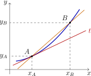
Kiezen we \(B\) steeds dichter bij \(A\), dan nadert \(AB\) tot de raaklijn \(t\) in \(A\).
\(\Rightarrow \) snelheid waarmee \(y\) verandert voor \(x = x_A\) (ogenblikkelijke snelheid) = richtingscoëfficiënt van de raaklijn \(t\) in \(A\).
4 VBTL Oefeningen
VBTL Analyse 1a: p 63 nr 11; p 65 nr 18; p 67 nr 21 tot 23